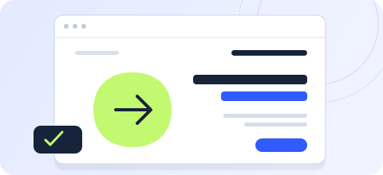
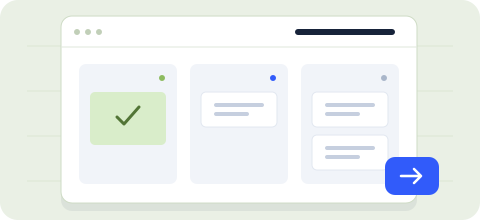
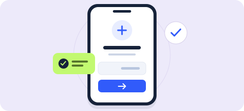

שיראו מה יש לכם להציע
אתרים ודפי נחיתה
אתר שמספר את הסיפור של העסק ומוביל את הלקוחות לצעד הבא.
למשלשירותים, עבודות ודרך פשוטה ליצור קשר.
- עיצוב ותוכן
- מחשב ונייד
- יצירת קשר
הסטודיו של רז ובן
אנחנו מעצבים ומפתחים אתרים וכלים לעסקים. בחרו כיוון כדי לראות איך הוא יכול להיראות.
מעצבים ומפתחים אתר שמציג אתכם, מסביר מה אתם מציעים ומאפשר ללקוחות לפנות בקלות.
נדבר על אתרים ודפי נחיתה ←אתר שמחבר בין מה שאתם עושים
לבין האנשים שמחפשים אתכם.
מסך שמרכז פניות, מציג את מצב הטיפול ועוזר לדעת מה הצעד הבא.
דוגמה לממשק שמאפשר לבקש פגישה.
בוחרים את השירות המתאים ומשאירים פרטים כדי לתאם את הפגישה.
מתחילים בפעולה המרכזית של המוצר, ומפתחים סביבה גרסה ראשונה.
שלוש המחשות לרעיונות אפשריים. אלו אינן עבודות לקוח או מערכות פעילות.
להציג את העסק, לפשט את העבודה או להתחיל מוצר חדש. שלושה כיוונים, עם פתרון שמתאים למה שאתם צריכים.

שיראו מה יש לכם להציע
אתר שמספר את הסיפור של העסק ומוביל את הלקוחות לצעד הבא.

פחות בלאגן. יותר שליטה.
כלי שמרכז מידע ופעולות במקום אחד, לפי הדרך שבה אתם עובדים.

להוציא את הרעיון לדרך
גרסה ראשונה שמתרכזת בפעולות החשובות של המוצר שלכם.
רז + בן = RABEN
חשיבה, עיצוב ופיתוח באותו שולחן.
אנחנו רז ובן, השותפים שמאחורי RABEN. אוהבים לקחת צורך אמיתי של עסק, לשאול את השאלות הנכונות ולהפוך אותו למשהו ברור, שימושי ונעים לעבוד איתו.
מהשיחה הראשונה ועד למסך האחרון, אנחנו חושבים, מעצבים ומפתחים יחד. מכירים את האנשים שמאחורי העסק ומדייקים איתם את מה שחשוב לבנות.
הנה מה שאנחנו עושים יחד, ומה יוצא מכל שלב.
שואלים על העסק, הקהל והעבודה היומיומית. מגדירים מה הפתרון צריך לעשות ומה חשוב לבנות קודם.
יוצאים עם: כיוון ברור והיקף עבודה.מסדרים את התוכן, מתכננים את המסכים ומעצבים את החוויה. עוברים עליה יחד ומדייקים לפני הפיתוח.
יוצאים עם: מבנה ועיצוב שאפשר להבין.מפתחים את האתר או הכלי, בודקים את הפעולות והתצוגה במחשב ובנייד ומתכוננים יחד לשימוש.
יוצאים עם: פתרון שאפשר להתחיל לעבוד איתו.ואם נשאר משהו פתוח, פשוט נדבר.
כן. מתחילים מהעסק, מהקהל ומהמטרה. מתוך השיחה מגדירים יחד את התוכן, המבנה והכיוון העיצובי שמתאימים לכם.
בהחלט. שלחו לנו קישור וספרו מה הייתם רוצים לשנות. נבדוק את האתר ונגדיר יחד אם נכון לרענן את העיצוב, לשפר את השימוש או לבנות מחדש.
זה תלוי בהיקף העמודים, בתוכן ובתכונות שצריך לפתח. אחרי שנכיר את הצורך שלכם, נוכל להציע היקף עבודה, מחיר ולוח זמנים לפני שמתחילים.
כן. בונים את החוויה למחשב ולנייד, עם תשומת לב לקריאות, לניווט ולטפסים — כדי שיהיה פשוט להבין את העסק ולפנות אליכם מכל מסך.
רעיון חדש, אתר שצריך רענון או עבודה שאפשר לפשט. ספרו לנו בכמה מילים, ונמצא יחד את הצעד הבא.
השאירו שם, טלפון וכמה מילים על הפרויקט. הפנייה תישלח לצוות RABEN ונחזור אליכם.